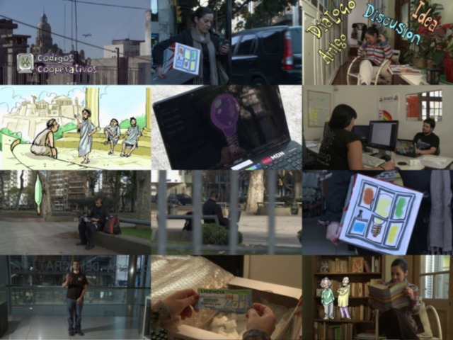

index | OSiUX | blog | docs
2012
15/OCT
29/SEP
07/SEP
30/AGO

27/AGO
06/JUL
05/JUL
30/JUN
26/JUN
15/JUN
14/JUN
13/JUN
01/JUN
28/MAY
25/MAY
24/MAY
23/MAY
18/MAY
05/MAY
28/ABR
05/MAR
29/FEB
17/FEB
14/FEB
Author: Osiris Alejandro Gómez (osiux@osiux.com)
Date:
Emacs 24.3.1 (Org mode 8.0.3)
Validate